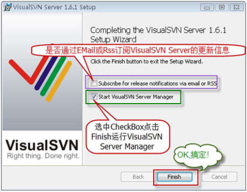
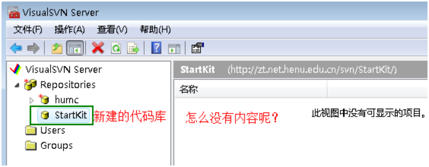
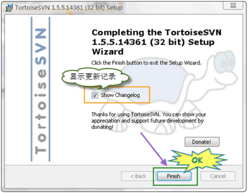
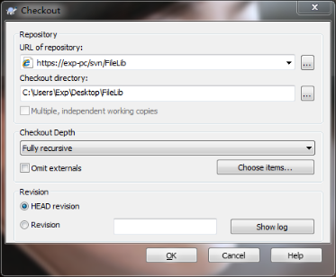
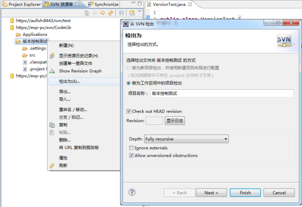
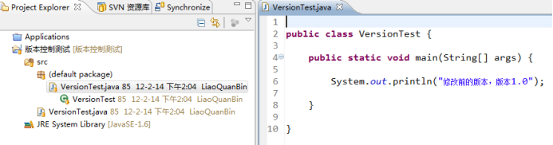

1. VisualSVN Server 简介
介绍 VisualSVN Server之前，首先说说 Subversion。
Subversion 是一个自由，开源的版本控制系统。在 Subversion 管理下，文件和目录可以超越时空。Subversion 将文件存放在中心版本库里。这个版本库很像一个普通的文件服务器，不同的是，它可以记录每一次文件和目录的修改情况。这样就可以籍此将数据恢复到以前的版本，并可以查看数据的更改细节：做了哪些修改，谁做的修改，等等。正因为如此，许多人将版本控制系统当作一种神奇的“时间机器”。
Subversion的版本库可以通过网络访问，从而使用户可以在不同的电脑上进行操作。从某种程度上来说，允许用户在各自的空间里修改和管理同一组数据可以促进团队协作。因为修改不再是单线进行（单线进行也就是必须一个一个进行），开发进度会进展迅速。此外，由于所有的工作都已版本化，也就不必担心由于错误的更改而影响软件质量—如果出现不正确的更改，只要撤销那一次更改操作即可。
某些版本控制系统本身也是软件配置管理系统（如SCM），这种系统经过精巧的设计，专门用来管理源代码树，并且具备许多与软件开发有关的特性—比如，对编程语言的支持，或者提供程序构建工具。不过Subversion并不是这样的系统。它是一个通用系统，可以管理任何类型的文件集。
VisualSVN和Subversion一样，都是版本控制器SVN的服务端，一个重要区别是VisualSVN比Subversion配置起来容易的多了。
如果直接使用Subversion，那么在Windows 系统上，要想让它随系统启动，就要封装SVN Server为Windws service，还要通过修改配置文件来控制用户权限，另外如果要想以Web方式（http协议）访问，一般还要安装配置Apache，如果是新手，岂不是很头痛？
而VisualSVN Serve集成了Subversion和Apache，省去了以上所有的麻烦。安装的时候SVN Server已经封装为Windws service，Apache服务器的配置也只是在图像界面上，指定认证方式、访问端口等简单操作；另外，用户权限的管理也是通过图像界面来配置。
需要知道的是，VisualSVN和VisualSVN Server又有一定区别，两者虽然同是SVN的**服务端**，但前者是收费的，后者是免费的。
还有一点， 用VisualSVN Server所搭建的服务器仅能在局域网下工作，这是团队开发中必须要注意的，所有成员都必须在同一局域网才能进行资源的同步与共享。一旦客户机与服务机跨越了路由，便无法相连。
2. TortoiseSVN简介
TortoiseSVN 是 Subversion 版本控制系统的一个免费开源**客户端**，可以超越时间的管理文件和目录。
实际上安装TortoiseSVN后，它是以一种类似“右键插件”的方式存在，使用TortoiseSVN能够更方便地管理SVN服务器上的资源，在团队开发中能够更有效实时地共享所有资源。
这里使用TortoiseSVN的一个主要原因是为了使用它的一个基本功能：把代码或资源迁入SVN服务器以达到同步共享的目的。
3. VisualSVN Server的安装
先到网上下载VisualSVN Server的最新版（当前为2.1.10）。
运行 VisualSVN-Server-2.1.10.msi 安装程序后，点击Next按钮继续。
勾选“I accept the terms in the License Agreement”选择框，点击Next按钮继续下一步操作。
选择完全安装方式，点击Next按钮继续。
到这里开始要注意：
- “Location”为VisualSVN Server的安装目录，可任意选择。
- “Repositories”为SVN代码仓库的位置，即在使用时共享资料的位置，因此基于方便使用的考虑，不建议该位置设置太深（一般在磁盘根目录下再建一层即可），否则以后使用时同步资源库不方便。
- “Server Port”为服务端口选择，后面有一个选择框“Use secure connection”。不勾选该选择框为使用快速链接【http协议】，此时供选择的端口有80/81/8080三个；勾选该选择框为使用安全链接【https协议】，这时的端口只有433/8433二个可用。
一般建议选择安全链接【https协议】，即勾选选择框，端口使用默认的即可。设置完毕点击Next按钮继续下一步，然后一直到安装完成即可。

4. VisualSVN Server的配置
安装完VisualSVN Server后，运行VisualSVN Server Manger，启动界面，其中：
- “Status”为SVN服务器状态，包括运行状态和服务器URL地址。
- “Logging”为服务器日志。
- “Subversion Authentication”为账户（User和Groups）信息。
- “Repositories”为SVN代码库信息。
首先添加一个代码库。右击“Repository”，出现下图所示的右键菜单，任意选择一种方式均可创建一个新的代码库。
然后在文本框中输入代码库名称。
需要注意的是，若选择框“Creat default structure”被选中，则在代码库StartKit下面会创建trunk、branches、tags三个子目录；不选中，则只创建空的代码库StartKit。点击OK按钮，代码库StartKit则创建成功。
创建完代码库后，没有任何内容在里面。添加内容的方法会在后面说明，这里暂且略过。

下面，开始创建用户Users。在左侧的Users上点击右键，出现下图所示的右键菜单，任意选择一种方式均可创建一个新的用户。
然后设置新用户的用户名和密码。输入信息后，点击OK按钮，就创建一个用户了。按照这种方式，创建4个用户：starter、Developer1、tester1、manager1。
然后把这些用户授权给刚才创建的代码库StartKit。只有被授权的用户才能使用StartKit代码库内的资源，与其他用户进行资源共享。具体方法如下：
首先右击刚才创建的代码库StartKit, 选择“Properties”，弹出如下界面：
点击”Add…”按钮，然后选择刚才创建的4个新用户，点击OK按钮则完成了授权工作。
大家可能注意到了图中的Groups。是的，我们也可以先创建组，把用户添加到各个组中，然后对组进行授权，操作比较简单，在此略过。
把用户授权给代码库后，还要继续对每个用户（或组）进行详细的权限设置：
- “No Access”为禁止该用户访问代码库。
- “Read Only”为虽然用户可以访问代码库，但只有读资源的权限。
- “Read / Write”为用户不但可以访问代码库，还能对其中的资源进行读或写。
需要注意的是，在用户列表中存在一个“Everyone”用户，为缺省用户，暂时无视之即可。
设置完权限后，点击“确定”按钮，这4个用户就具有了访问StartKit代码库的不同权限。
本例中各个用户的权限说明：
- 用户starter：在团队中是新来者，不希望他向代码库中提交新代码，所以他只能读取代码库中的代码，不能提交代码。
- 用户tester1：是测试人员，不负责代码编写，所以也是只读权限。
- 用户Developer1：是开发人员，自然具有读写的权限。
- 用户manager1：是项目经理，自然具有读写的权限。
在实际的项目开发过程中，Developer和tester往往不可能只有一个人，这时候使用组来授权会更加方便。
5. TortoiseSVN的安装
先到网上下载TortoiseSVN的最新版（当前为1.7.2）。
运行 TortoiseSVN-1.7.4.22459-x64-svn-1.7.2.msi安装程序后，点击Next按钮继续。
此时点选“I accept the terms in the License Agreement”选择框，点击Next按钮继续下一步操作。
然后选择安装目录，任意即可。设置完毕点击Next按钮继续下一步，然后一直到安装完成。
点击Finish按钮后TortoiseSVN即安装完毕，但此时可能会提示重启系统，其实不重启也没有关系。

6. VisualSVN Server与TortoiseSVN的基本组合使用
注意在使用SVN服务之前，要先确保关闭Windows防火墙，否则可能出现无法连接到SVN服务器的情况。
关闭Windows防火墙的方法是：
右击计算机 -> 属性 -> 系统和安全 -> Windows防火墙 -> 打开或关闭Windows防火墙
为方便下文说明，这里重新配置了一下VisualSVN Server：
SVN资源库为CodeLib（代码库）和FileLib（文件库），其所在的位置可在VisualSVN Server启动界面查得：
用户及其权限分别为：（Everyone是缺省用户，暂无视之）
- CaiZhenBiao Read Only
- DengWeiWen Read Only
- LiaoQuanBin Read/Write
- LiJianCong Read Only
这里设置4个用户的密码均为123456。
然后说一下用TortoiseSVN把源代码迁入SVN服务器的例子。
首先在Eclipse新建项目TestSVN：
然后打开Eclipse的工作空间，可以找到项目TestSVN的文件夹，如下图：
右击要迁入SVN服务器的项目文件夹TestSVN，可以看到TortoiseSVN出现在右键选项中。若选择Setting则可进行相关的设置，这里不做详细说明。我们选择Import把项目TestSVN迁入SVN服务器。
此时弹出如下图所示的界面， URL ： https://Exp-PC/svn/CodeLib 就是当前要迁入的SVN服务器地址。其中 https://Exp-PC/ 是服务器名，svn是代码库的根目录，CodeLib就是刚才添加的代码库。
注意上图中左下角的“Include ignored files”，在第一次迁入源代码时没有用，可以不勾选。但是，在以后提交代码的时候是非常有用的。
点击OK按钮后则自动把TestSVN项目迁入了SVN服务器。迁入过程如下图所示。迁入完成后再点击OK关闭窗口。
此时在VisualSVN Server中点击CodeLib，可在右方看到刚才迁入SVN服务器的源代码（如下图），若没有显示，右键刷新即可。
注意：也可从这里的灰色条栏中看到当前代码库CodeLib的URL地址。
不难发现项目TestSVN的项目文件夹没有了，在CodeLib中只保留了其项目内容。这是因为“根文件夹默认不上传”，因此要把整个TestSVN项目（包括项目文件夹在内）都上传到SVN服务器，可以把整个项目复制到任意一个空文件夹A中，使得文件夹A作为根文件夹，再右击文件夹A进行上传。效果如下图所示。
资源上传到SVN服务器的是资源的副本，因此一旦资源被上传，即使在本地删除也不会对服务器中的资源有任何影响。
7. 资源的同步与共享
第6节 介绍了如何利用TortoiseSVN把源代码上传到SVN服务器，其实上传非代码的其他资源也是同样的方法，把所需上传的资源（如Word、Excel、*.rar等）放在文件夹内，右键Import即可。同样要注意的是“根文件夹默认不上传”。
本节主要介绍怎样读取已上传到SVN服务器的指定资源的方法，主要有三种：
- （1）浏览器连接SVN服务器查看和下载资源；
- （2）TortoiseSVN的Checkout功能导出SVN服务器资源；
- （3）Eclipse连接SVN服务器查看和导出资源。
方法（3）要在Eclipse安装SVN插件后（见 第8节）才能使用，这将在 第9节 和 第10节 介绍。所以在本节中主要介绍方法（1）和方法（2）。
7.1. 浏览器连接SVN服务器查看和下载资源
要通过浏览器连接SVN服务器，首先需要获取SVN服务器的URL地址，URL地址的获取方法如下图所示：
打开VisualSVN Server界面，右击想要连接的代码库CodeLib，点选“Copy URL to Clipboard”即把代码库的URL复制到剪贴板。
然后把URL黏贴到浏览器地址栏回车即可。
部分浏览器可能会拦截，如火狐浏览器可能会出现下图的警告。此时点击“我已充分了解可能的风险”，然后点击“添加例外”，“确认安全例外”即可。 同时请确认windows防火墙已关闭。 其他浏览器也是类似的信任安全操作。
通过浏览器拦截后，会弹出身份认证窗口。此时只需要把刚才在VisualSVN Server中设置的4个用户之中的一个账号密码输入即可。然后浏览器就会反馈出当前SVN服务器所保有的资源。
下载界面如下：
7.2. TortoiseSVN的Checkout功能导出SVN服务器资源
在任意空白位置点击鼠标右键，在弹出的功能菜单中选择“SVN Checkout”。

如上图所示（下述的“检出”实质就是把SVN服务器上的资源复制一份副本到本地）：
- “URL of repository”为要检出资源的SVN资源库地址。
- “Checkout directory”为要检出到的位置，可自由选择。
- “Checkout Depth”为检出资源的深度，默认为把整个数据库的资源都检出。若要指定检出的项目，可点击“Choose item”按钮进行选择，只勾选需要检出的资源，然后点选OK按钮。
- “Revision”为版本控制选项，功能很重要，将在第11节叙述相关作用。
- “Show log”为显示被选中的服务器的操作日志。
如上图为检出过程。
如下图为检出后的资源文件。其中左下角的Icon若为“绿色√”说明本地资源与服务器资源一致。当本地资源被修改后，“绿色√”变成“红色！”，说明本地资源与服务器资源不一致。
而关联本地与服务器资源一致性的功能由“.svn”文件夹实现，该文件夹默认为隐藏。当删除“.svn”文件夹后本地与服务器断开连接，Icon消失。
8. Eclipse的SVN插件安装
首先安装Eclipse关于SVN的插件。这里使用Eclipse在线安装插件的方法。
Google搜索“SVN Eclipse插件”即可很容易找到SVN插件的安装地址，当前的安装地址为：http://subclipse.tigris.org/update_1.6.x 。
然后打开Eclipse -> Help -> Install New Software。
把地址 http://subclipse.tigris.org/update_1.6.x 复制到“Work with”下按回车，等待加载如下图的3个插件，点击 “Select all”按钮选中全部，然后点击Next按钮执行下一步，按提示操作即可完成安装。可能安装的时间较漫长，请耐心等待。
9. Eclipse与SVN服务器的连接
安装SVN插件后，找到Eclipse左下角的“+”（快速视图菜单），再点击打开快速视图菜单，选择Other。在弹出的界面中输入“SVN”，点选搜索到的“SVN资源库”，点击OK按钮确认。

此时会出现SVN资源库窗口（如下图）。在空白处右击，选择“新建”，在点选“资源库位置”。然后在弹出的窗口输入SVN服务器的地址，这里使用前面创建的代码库的URL地址：https://Exp-PC/svn/CodeLib 。地址无误则点击Finish按钮确定。
此时会弹出如下图所示的对话框，选择“永久接受”，然后输入用户名和密码。这里必须使用授权给当前正在同步的SVN资源库的用户。 前面第6节中，配置给CodeLib代码库的用户有4个，这里选择其中的一个即可，为避免以后再输入账户密码，可选择“保存密码”。
此时已经可以看到SVN服务器上的代码库，展开则可看到保存在SVN服务器的资源。
10. 利用SVN插件进行代码的同步与共享
10.1. 从SVN服务器上把代码同步到本地
打开Eclipse的“SVN资源库”，找到要下载的源代码项目，右击该项目的根文件夹，选择“检出为”则可把服务器上的项目同步到本地。
如上图所示，检出时会提示命名项目名称，任意命名均可（只要与本地已有项目不重名）。命名完毕后直接按Finish按钮。
此时返回本地Project目录，即可看到刚才从SVN服务器同步下来的TestSVN项目。
如下图所示，从服务器上同步到本地的项目，可以在左边项目列表看到该源代码的来源，以及最后被更新的时间和用户信息。
10.2. 把本地的代码共享到SVN服务器
新建项目TestSVNUpdata，右击项目文件夹，选择Teamshare project在弹出的界面中选择“SVN”，点击Next按钮继续。
如下图所示，选择“使用已有资源库位置”，然后在资源库地址列表中点选要上传的SVN服务器，点击Next按钮继续下一步。若资源库地址列表为空，则选择“创建新的资源库的位置”，输入要上传的SVN服务器的URL地址即可。
到这步选择“使用项目名做为文件夹名”，点Finish后自动切换到Synchronize标签，其中Synchronize显示的是为等待同步到服务器的项目，这里只有项目TestSVNUpdata可供选择。右击TestSVNUpdata项目文件夹，选择“提交”。
然后弹出下图的界面，勾选全部，点击OK按钮。
切换回到“SVN资源库”标签，右击刚才所上传到的SVN资源库，选择“刷新”，则可看到刚才上传的项目，上传成功。
10.3. 本地代码与服务器代码的更新和冲突处理
在说明更新和冲突处理之前，先解释一下各种SVN图标含义。
当本地的项目是从SVN服务器上更新下来的时候，若本地或SVN服务器的代码有被修改过，则当进行如此操作时：在“Project Explorer”标签的本地项目上点击右键 Team 与资源库同步（“与资源库同步”仅是在本地和服务器进行比对，暂时并不会使得本地或服务器代码有任何改变）。
这时会在“Synchronize”标签中列出本地与SVN服务器上不一致的文件列表。文件列表中各个文件的右方会根据不同的情况出现不同的Icon（即SVN图标），它们的含义分别为：
- 灰色向右箭头：本地修改过；
- 蓝色向左箭头：SVN上修改过；
- 灰色向右且中间有个加号的箭头：本地比SVN上多出的文件；
 蓝色向左且中间有个加号的箭头：SVN上比本地多出的文件；
蓝色向左且中间有个加号的箭头：SVN上比本地多出的文件；- 灰色向右且中间有个减号的箭头：本地删除了而SVN上未删除的文件；
 蓝色向左且中间有个减号的箭头：SVN上删除了而本地未删除的文件；
蓝色向左且中间有个减号的箭头：SVN上删除了而本地未删除的文件；- 红色双向箭头：SVN上修改过,本地也修改过的文件。
10.3.1. 更新处理
更新主要有两种操作形式：
- （1）从本地提交到服务器；
- （2）从服务器覆盖/更新到本地。
前者主要用于开发进度的更新，后者主要用于从服务器的备份恢复本地错误。两种操作都比较简单，在核对完本地和服务器代码后，只需在“Synchronize”标签中选中需要更新的文件（或文件夹），然后点击右击，找到“Team”，此时选择“提交”则是进行操作（1），选择“覆盖/更新”则是进行操作（2）。具体要进行哪种操作应该视情况而定，这里不再详细说明。
10.3.2. 冲突处理
产生冲突的原因很多，最普遍的一个原因就是：假设服务器上有源代码x，开发者A从服务器上复制了x的副本x1到本地Ax进行开发，开发者B从服务器上复制了x的副本x2到本地Bx进行开发。
当开发者A首先完成了他的开发任务时，此时其本地Ax的源代码就是x1*，当他x1*提交到服务器上后，服务器的源代码就被更新为x1*。
此后开发者B也完成了它的开发任务，此时其本地Bx的源代码就是x2*，当他试图把x2*提交到服务器上时，就出现了冲突。因为此时服务器的代码不再是x，而是被A修改过的x1*。x1*中不但有A增加的代码，原本x中还可能有被A删改过的地方。
此时B要提交代码x2*，就必须根据服务器的代码x1*先把x2*进行恰当的修改，使得修改后的x2**不但包含B的开发部分，还比包含A开发的x1*部分。
如下图所示为产生冲突的一种情况，Eclipse的SVN插件自动指出了本地与服务器不同或冲突的部分，B就能根据这些提示在本地进行修改再提交。结合下图在本地进行如下修改：
- （a）本地第6行由于是在本地被无故修改的，因此根据服务器进行恢复
- （b）本地第8行需要保留，因此不修改
- （c）服务器第8行需要被保留，因此复制到本地
- （d）服务器第10行不需要保留，因此不复制到本地
- （e）服务器第12行需要保留，复制到本地
- （f）本地第10行不需要保留，删除
修改后如下图所示，此时冲突已解决，本地保存后，右击代码文件 -> Team -> 提交，即可更新到服务器。
11. *版本控制
版本控制已在 第7.2节 介绍TortoiseSVN的Checkout功能时粗略提及过，本节将详细介绍如何利用Eclipse的SVN插件进行版本控制。TortoiseSVN的版本控制原理雷同，因此不再详细介绍，读者可自行摸索。
以下为示例。
如下图所示，首先在Eclipse建立一个新的本地项目“版本控制测试”。
然后把该项目上传到SVN服务器：右击项目文件夹 -> Team -> Share project。
然后按下图依次进行操作。
到这步为止，为当前提交到服务器的项目在“编辑提交注释”一栏中填写版本信息。这步很重要，是作为以后版本控制的依据。
填写完版本信息后，点击Finish按钮，自动跳转到“Synchronize”标签（同步标签），在同步列表中出现等待同步到服务器的项目。右击“版本控制测试”项目的文件夹，选择“提交”，然后按提示操作即可把“版本控制测试”项目连同其版本信息写入SVN服务器。
若提交对话框的注释栏为空，请重新填写版本信息，也可利用下拉选择。
此时SVN服务器上只有“版本控制测试”项目的1.0版本。
现在回到本地，现在对本地的“版本控制测试”项目进行修改：

然后右击项目文件夹，选择“Team”，选择“与资源库同步”。自动跳转到“Synchronize”标签（同步标签）。右击“版本控制测试”项目的文件夹，选择“提交”。在出现的提交界面中填写新的版本号。
确认上传后，现在SVN服务器已经有了“版本测试控制”项目的1.0版本和2.0版本。虽然在SVN资源库中依然只有一个“版本测试控制”项目，这是因为SVN资源库默认是显示项目的最新版本。
注意此时服务器上有两个版本1.0和2.0，而本地上只有最新的版本2.0。
下面我们试图把本地的版本恢复到1.0：
在资源库中右击“版本控制测试”，选择“检出为”。
可以看到“Check out HEAD revision”默认是被勾选的，表示从服务器检出最新版本（当前为2.0）的项目到本地。
- “Depth”为检出深度，默认为选中的整个资源文件，按需设置，这里为默认值。
- “Check out HEAD revision”下方有“Revision”，这里是填写希望检出的版本号，这里先不急着填，先点击“显示日志”。

如上面几张图所示，可以看到点击“显示日志”后，出现了关于项目“版本控制测试”的修改日志列表，日志列表下方对应的是当前被选中的版本号的详细修改信息。但是出现了两个“最初版本1.0”和一个“版本2.0”。现在希望把本地项目恢复到1.0版本，应该选择哪个呢？
不难发现，最底下的“最初版本1.0”的修改信息只有1个空文件夹，那是之前我们把项目第一次同步到服务器时产生的：我们实际上分开了两步上传，先在服务器创建了项目文件夹，然后再上传项目文件，而这两次操作我们都编写了同一个版本号信息，因此会出现这种情况。
而中间的“最初版本1.0”的修改信息则是整个项目的内容，那么显然现在我们要恢复到的是中间的“最初版本1.0”，即修订号为85的版本。
至于“版本2.0”的修改信息只有“VersionTest.java”一个文件，这也是因为我们只对这个文件做了修改的缘故。
现在我们选择“最初版本1.0”（修订号为85）的版本，点击OK按钮。自动返回到检出界面，而“Check out HEAD revision”已不再被勾选，“Revision”一栏自动被填写了对应修订号85。点击Finish按钮，提示覆盖本地项目，点击OK按钮即可。
返回本地项目查看，已被恢复至1.0版本（如下图）。

类似地，现在也可以从服务器中把最新的版本2.0重新检出到本地，方法一样，具体步骤不再阐明。